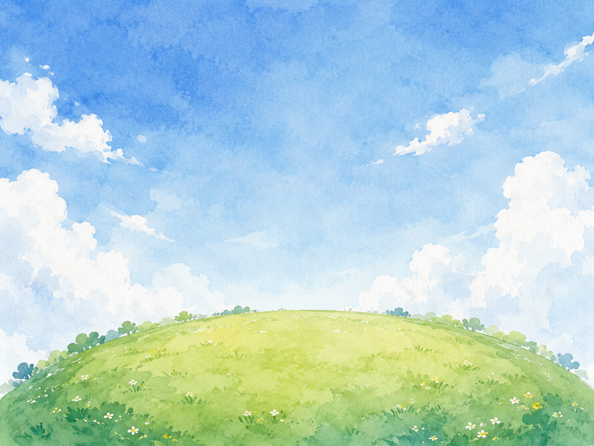
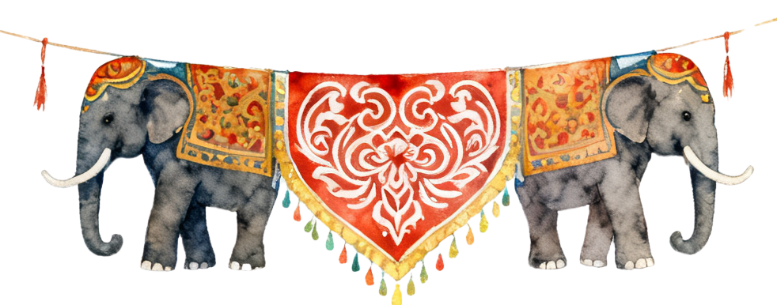
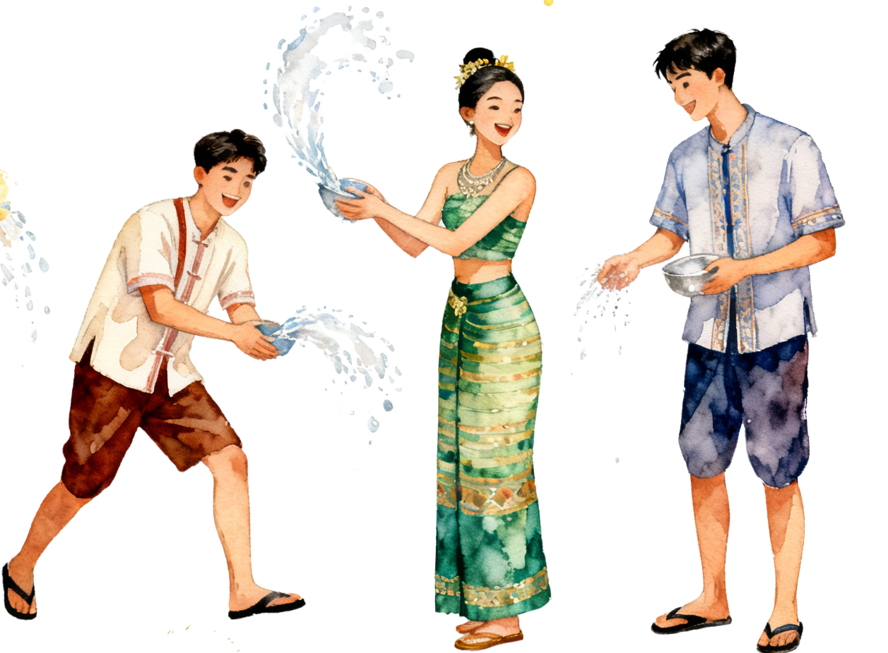
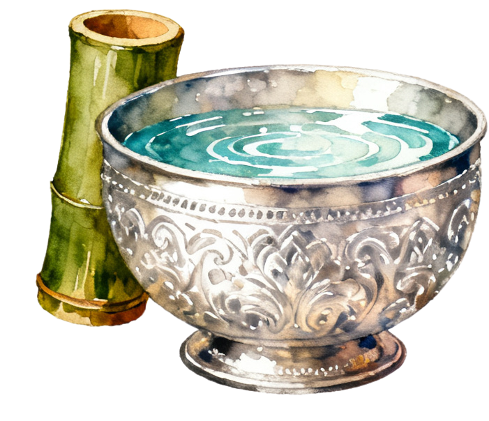
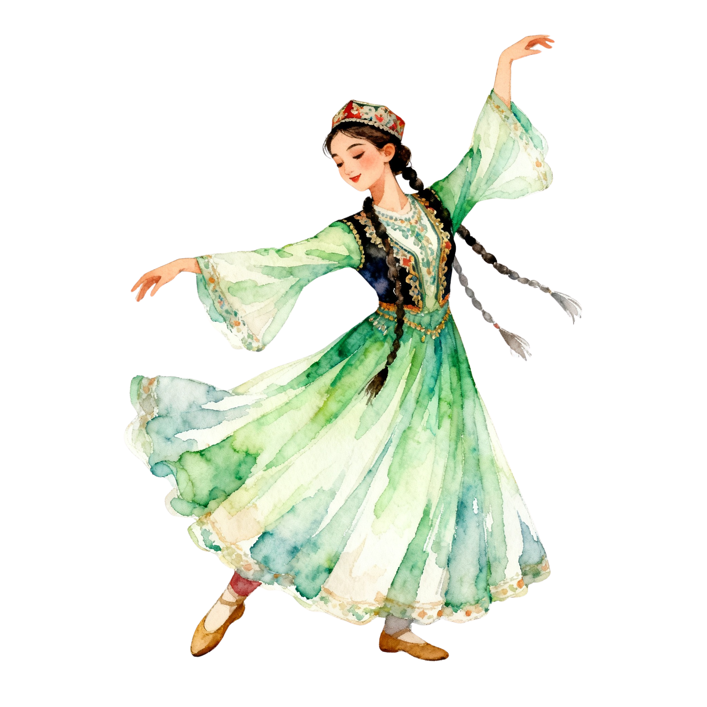
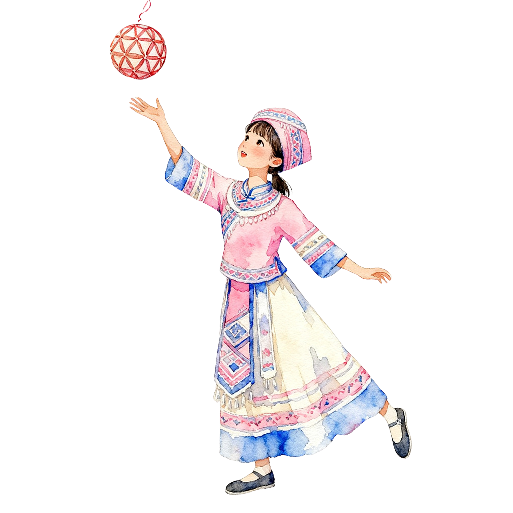
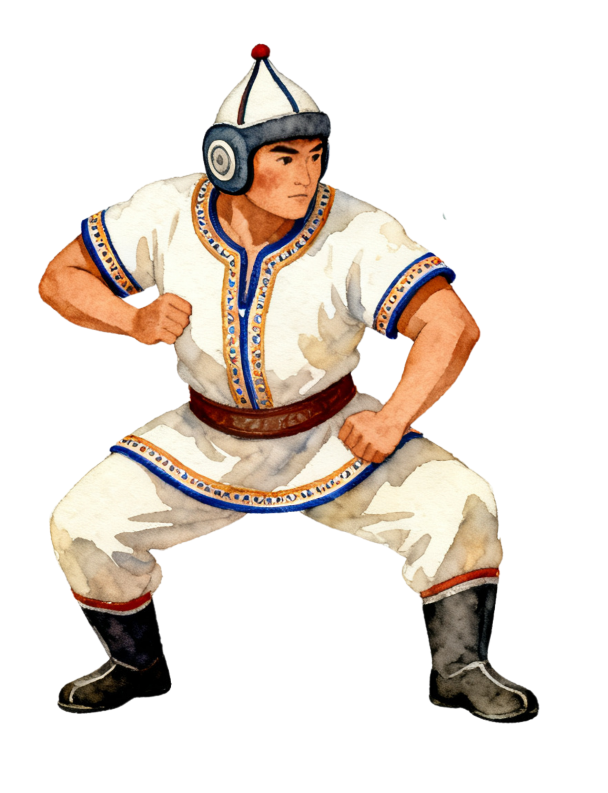

每年四月，有一件事会在西双版纳准时发生。 街道被淹没。不是洪水，是人。 来自天南地北的陌生人，挤进同一条街，用同一盆水互相泼湿，然后哈哈大笑。没有人是局外人。 泼水节，到底为什么这么火？
西双版纳泼水节的游客数字，三年来一路走高：2024年203.19万人次，2025年222.63万，到2026年达到了238.08万。三年间增长了约17%，相当于每年多来一座中等城市的人口。
这些人，从哪里来？
4月10日前，西双版纳迁入指数仅0.417；4月13日触及峰值0.807，几乎是节前的两倍。节庆结束回落至0.231。
一涨一落，是百万人在同一时间做了同一个决定。
峰值日迁入人流中，普洱33.77%，昆明20.37%，省外其他城市41.99%。超过四成的人专程奔赴而来。
他们选择了同一个节点，汇入同一条街道。
西双版纳州文旅局的数据显示，2026年泼水节游客中，女性占57.1%，男性占42.9%；年龄结构上，90后是最大的单一群体，占比34.4%。
这意味着，走进泼水节的人，相当大比例是当下中国最活跃的内容生产者——他们拍视频，写评论，把自己的体验发到网上，变成下一个人出发的理由。
节庆本身是吸引力，社交分享是放大器。每一个被泼湿的笑脸，都在成为下一年238万人中的某一个人的起点。
傣语里，泼水节叫"桑堪比迈"，意思是新年。但对于那些从成都、广州、北京赶来的人而言，它的意思更简单——一个可以把水泼向陌生人、而对方只会大笑的地方。
238万人，在同一场水里相遇。
他们来自不同的城市，说着不同的方言，带着不同的习惯。但他们都被泼湿了，都笑了。
数据能记录的，是人流的峰值、游客的结构、词云的分布。数据记录不了的，是那个被水枪打中之后的瞬间——某种边界消失了，某种共同的东西浮出了水面。
这，大概就是"共同体"最朴素的样子。
数据来源：西双版纳州人民政府、西双版纳州文旅局、百度地图迁徙大数据、微博公开博文